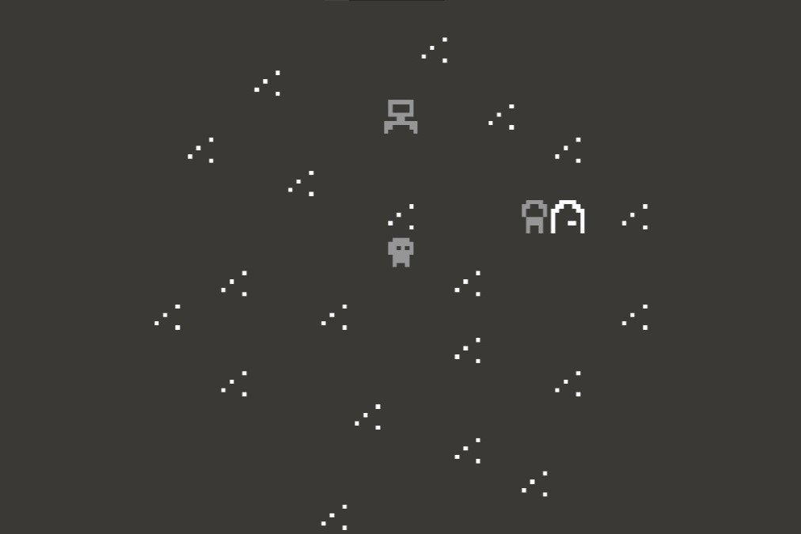

Trilha sonora

Descrição:Jogo de tabuleiro desenvolvido pensando em pessoas com deficiência visual
Objetivo:Proporcionar uma experiencia igualitaria,inclusiva e educativa
Tecnologias:Arduino e C++
GitHub:Repositorio do projeto
404
Descrição: Jogo narrativo feito no Bitsy que explora glitches, memórias corrompidas e a sensação de estar perdido num jogo esquecido
Objetivo:Criar uma experiência poética e sensorial sobre tempo, memória e falhas digitais
Tecnologias:Bitsy,html e JavaScript
Itch.io:Jogue no itch.io